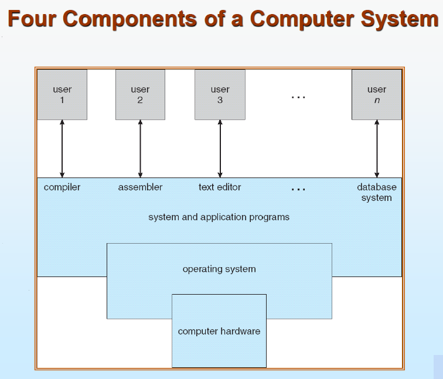
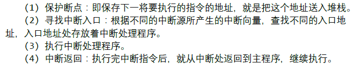
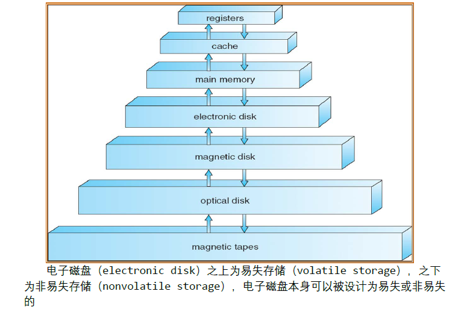
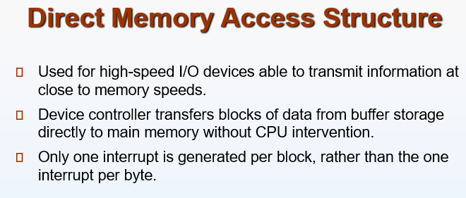
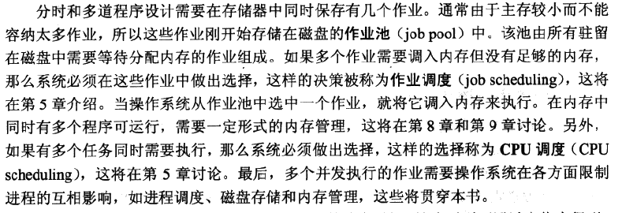
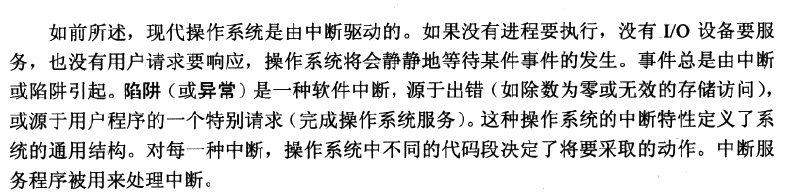
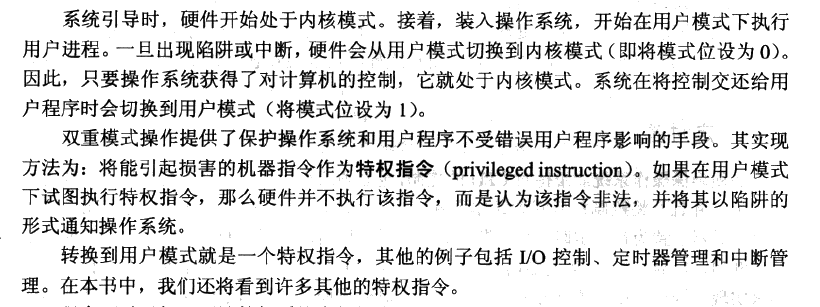

os-chapter1：操作系统第一章：导论
什么是操作系统
操作系统是一组控制和管理计算机硬件和软件资源、合理地对各类作业(程序）进行调度，以及方便用户的程序集合。操作系统是用户和计算机的接口，同时也是计算机硬件和其他软件的接口。
书上定义为操作系统是一直运行在计算机上的程序（通常称为内核）
操作系统最基本的两个特征：并发和共享
计算机系统组成
计算机系统的组织
计算机系统操作
计算机启动过程
https://zhuanlan.zhihu.com/p/60929600
其实电脑启动的过程是一个十分完善的硬件自检的过程，在加电自检的那几秒钟里面计算机可以完成上百道工序，下面就由我来与大家介绍一下这个过程。
第一步：在主板接通电源之后，系统就由POST(Power On Self Test,上电自检)开始自检，在我们刚刚接通电源的时候，整个系统由BIOS控制，电压还不太稳定（这个过程非常短暂，一般只有几毫秒，这个时候电压的稳定完全依靠主板和电源内部的滤波电容进行），主板芯片组会向CPU发出reset的命令让CPU开始初始化，同时主板芯片组等待电源发出POWE GOOD命令，一旦电源发出POWER GOOD命令，主板芯片组会马上停止reset命令的发出（如果是手动reset那么松开reset按钮时就会停止发出命令），这时候CPU会马上从地址FFFFF0H或FFFF0H开始执行寻址指令（这个地址是在BIOS内而不再内存里面），在这个地址中无论是AMI BIOS还是Award BIOS，在这个地址中都会存储一条跳转命令，直接跳转到系统BIOS中真正的启动代码处，这个时候BIOS就会进行到第二个步骤POST。
第二步：系统BIOS的启动代码首先要做的事情就是POST，POST的主要任务就是在检测系统中的一些关键设备是否存在和正常工作。由于POST在初始化显示卡之前，因此如果POST过程中出现任何的被BIOS认为的致命错误，比如没有找到内存或者说内存错误之类的，POST会通过主板上再带的扬声器来发送长短和数量不等的警报声以传递错误信息，如果在正常情况下，POST会进行的非常快，我们是难以感觉到这个过程的。
第三步：在这一步，系统BIOS会找到显示卡，存放显卡BIOS的ROM通常其实地址在C0000H处，系统BIOS找到显卡BIOS之后调用它的代码，由于显卡生产商的不同，所以显卡的初始化是由显卡BIOS来完成的，所以不同显卡厂商的界面也是不太一样的。
第四步：硬盘引导启动：这一步是根据BIOS设置的启动顺序进行，按照顺序将控制权依次转移给列表中的存储设备，无论是哪个设备，计算机都会依次读取这个设备的第一个扇区，即第一个512字节，如果这512个字节的最后两个字节是0x55和0xAA，表明这个设备可以用于启动；如果不是，表明设备不能用于启动，控制权于是被转交给"启动顺序"中的下一个设备，这最前面的512个字节就被叫做主引导记录（Master boot record，缩写为MBR）。
其中主引导记录的主要作用就是引导硬盘到指定的位置来加载操作系统，一般分为三个部分：第1-446字节：调用操作系统的机器码；第447-510字节：分区表（Partition table）；第511-512字节：主引导记录签名（0x55和0xAA）。
其中分区表的作用是将硬盘分为若干个分区，硬盘分区的好处就是在于可以在不同的分区中安装不同的操作系统，但是主引导记录必须知道每个操作系统具体是在哪个分区。
主引导记录的大小总共只有64个字节，其中分为四项，每项16个字节，也就是说，每块硬盘只有4个主分区，只能安装4套操作系统。每个主分区总共16个字节，分为6个部分：
第一个字节：如果为0x80，就表示该主分区是激活分区，控制权要转交给这个分区。四个主分区里面只能有一个是激活的。
第二至四个字节：表示主分区第一个扇区的物理位置（柱面、磁头、扇区号等等）。
第五个字节：表示主分区类型（具体内容比较多在这里就不再过多阐述）。
第六只八个字节：表示主分区的最后一个扇区的物理位置。
第九至十二个字节：表示主分区第一个扇区的逻辑地址。
第十三至十六个字节：表示主分区的扇区总数。
最后一条规定了 主分区的长度，也就是说，主分区的长度最大不能大于2^32，所以，每个分区512个字节的话，整块硬盘的大小不会超过2TB，所以提高硬盘大小只有两个办法：一是提高硬盘扇区总数；二是提高每个扇区的字节数。
第五步：硬盘启动。这个时候系统会优先从四个主分区里面的那个被激活的分区来启动，叫做引导卷启动（Volume boot record，缩写为VBR），卷引导记录的主要作用是，告诉计算机，操作系统在这个分区里的位置。然后，计算机就会加载操作系统了。但是如果系统被安装在了拓展分区和逻辑分区中，就要通过启动管理器来启动，在这种情况下，计算机读取"主引导记录"前面446字节的机器码之后，不再把控制权转交给某一个分区，而是运行事先安装的"启动管理器"（boot loader），由用户选择启动哪一个操作系统。
第六步：内核加载启动。这个时候计算机的操作系统位置已经确定，就要进行内核加载。在内核加载阶段，Ntldr 将首先加载Windows内核 Ntoskrnl.exe 和 硬件抽象层 (HAL). HAL 有点类似于嵌入式操作系统下的BSP（Borad support package)，这个抽象层对硬件底层的特性进行隔离，对操作系统提供统一的调用接口，操作系统移植到不同硬件时只要改变相应的 HAL 就可以，其它的内核组件不需要修改，这个是操作系统通常的设计模式。
接下来Ntldr 从HKEY_LOCAL_ MACHINE\SYSTEM\CurrentControlSet 下读取这台机器安装的驱动程序，然后依次加载驱动程序。驱动程序加载完成后，Windows做如下设置：
创建系统环境变量
启动 win32.sys ，这个是Windows子系统的内核模式部分。
启动 csrss.exe，这个是Windows子系统的用户模式部分。
启动 winlogon.exe
创建虚拟内存页面文件
对一些必要的文件进行改名
中断与陷阱
操作系统是中断驱动的（interrupt driven）。因为事件的发生通常通过软件或硬件中断来表示。
硬件通过系统总线向CPU发信号来触发，软件通过执行特别操作如系统调用（system call）触发中断，这种中断通常被称为陷阱（trap）。硬件中断具有随机性与突发性，而陷阱是程序安排好的。
CPU如何处理中断：
存储结构
主存（内存：main memory）是CPU唯一能直接访问的大容量存储。CPU要访问硬盘则需通过硬盘控制器。
缓存catch：从低速存储设备临时复制到高速存储设备。
IO结构
DMA
操作系统结构
Multiprogramming(多道程序)
操作系统将多个任务存储在内存中，CPU在作业之间进行调度切换。
优点
- CPU利用率高
- 系统吞吐量大
- IO设备利用率高
基本特征：
- 制约性
- 间断性
- 共享性
multitasking（多任务）
操作系统操作
双重模式（dual-mode)
User mode(处理用户代码或进程) 与 Kernel mode（处理系统代码或进程）
划分的原因
很多指令不能让用户直接操作，划分模式以达到限制用户操作的目的
进程管理
处于执行中的程序被称为进程。是系统内部的一个工作单元。程序是被动的实体，进程是动态的实体。每个进程建立进程控制块进行管理。
进程需要一定的资源（包括CPU时间、内存、文件、IO设备）以完成其任务。这些资源可以在进程创建时分配给进程，也可以在执行进程时分配给进程。除了在创建时得到各种物理和逻辑资源外，进程还可以接受传输过来的各种初始化数据（输入）。进程完成后释放资源。
系统由多个进程组成，所有这些进程可以潜在地并发执行。
操作系统负责下述与进程管理相关的活动：
- 创建和删除用户进程和系统进程。
- 挂起和重启进程。
- 提供进程同步机制。
- 提供进程通信机制。
- 提供死锁处理机制。
存储管理
操作系统提供了统一而逻辑的信息存储。操作系统对存储设备的物理属性进行了抽象，定义了逻辑存储单元，即文件。操作系统将文件映射到物理介质上，并通过这些存储介质访问这些文件。
文件系统管理
操作系统负责下列有关文件管理的活动：
- 创建和删除文件和目录。
- 提供操作文件和目录的原语（基元）。
- 将文件映射到二级存储
- 在稳定介质上备份文件
大容量存储
操作系统负责下列有关硬盘管理的活动：
-
空闲空间管理。
-
存储空间分配。
-
硬盘调度。
由千二级存储器使用频繁，因此必须高效。计算机操作的最终速度可能与硬盘子系统的速度和管理该子系统的算法有关。
IO子系统
缓冲区(Buffer)与缓存(Cache)的区别
缓冲区是协调两个速度不匹配的过程。
缓存协调两个速度不匹配的设备，在高速存储器内放置快速存储区存放低层（慢速）数据。
概念：Spooling （即外部设备联机并行操作）
即Simultaneous Peripheral Operation On-Line的缩写，它是关于慢速字符设备如何与计算机主机交换信息的一种技术，通常称为“假脱机技术”。Spooling allows programs to “hand off” work to be done by the peripheral and then proceed to other tasks, or to not begin until input has been transcribed.
例子
以前由于未使用多进程，如果对操作系统执行打印命令，整个操作系统就不能与用户进行交互了，因此人们通常采用SPOOLING技术，将需要打印的内容由进程拷贝到一个功能较弱且廉价的计算机的硬盘上（功能弱体现在功能单一，即以支持SPOOLING操作为主要目的的机器），该计算机有操作系统，与打印机直接相连。这样就可以使高性能计算机免除为服务低速外设而浪费运算资源的情况。
补充
并行与并发
顾名思义，「并发」强调的是可以一起「出『发』」，「并行」强调的是可以一起「执『行』」。
与可以一起出发的并发（concurrent）相对的是不可以一起出发的顺序（sequential）：
- 顺序：上一个开始执行的任务完成后，当前任务才能开始执行
- 并发：无论上一个开始执行的任务是否完成，当前任务都可以开始执行
（也就是说，A B 顺序执行的话，A 一定会比 B 先完成，而并发执行则不一定。）
与可以一起执行的并行（parallel）相对的是不可以一起执行的串行（serial）：
- 串行：有一个任务执行单元，从物理上就只能一个任务、一个任务地执行
- 并行：有多个任务执行单元，从物理上就可以多个任务一起执行
（也就是说，在任意时间点上，串行执行时必然只有一个任务在执行，而并行则不一定。）
综上，并发与并行并不是互斥的概念，只是前者关注的是任务的抽象调度、后者关注的是任务的实际执行。而它们又是相关的，比如并行一定会允许并发。
所以：
- 单核 CPU 多任务：并发（不必等上一个任务完成才开始下一个任务）、串行（只有一个实际执行任务的 CPU 核）
- 多线程：并发、串行（所有线程都在同一个核上执行）；并发、并行（不同线程在不同的核上执行）
如下图，并发是两个队列交替使用一台咖啡机，并行是两个队列同时使用两台咖啡机